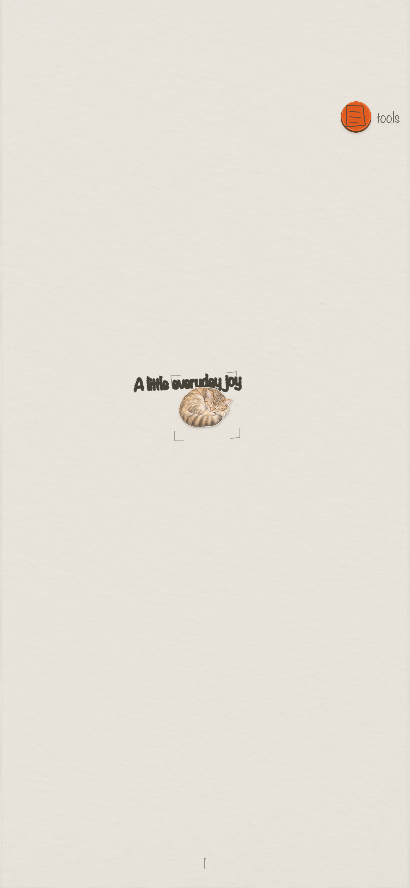
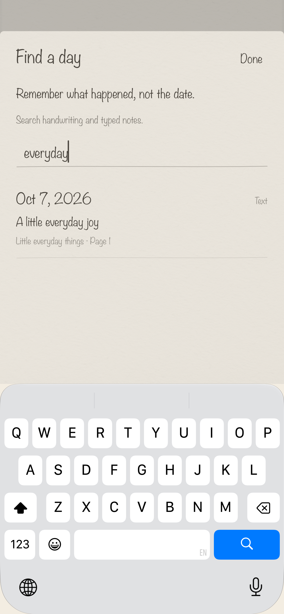
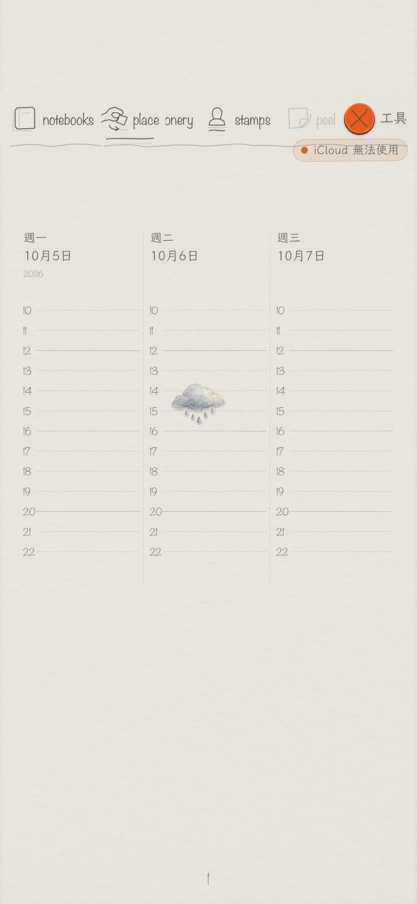
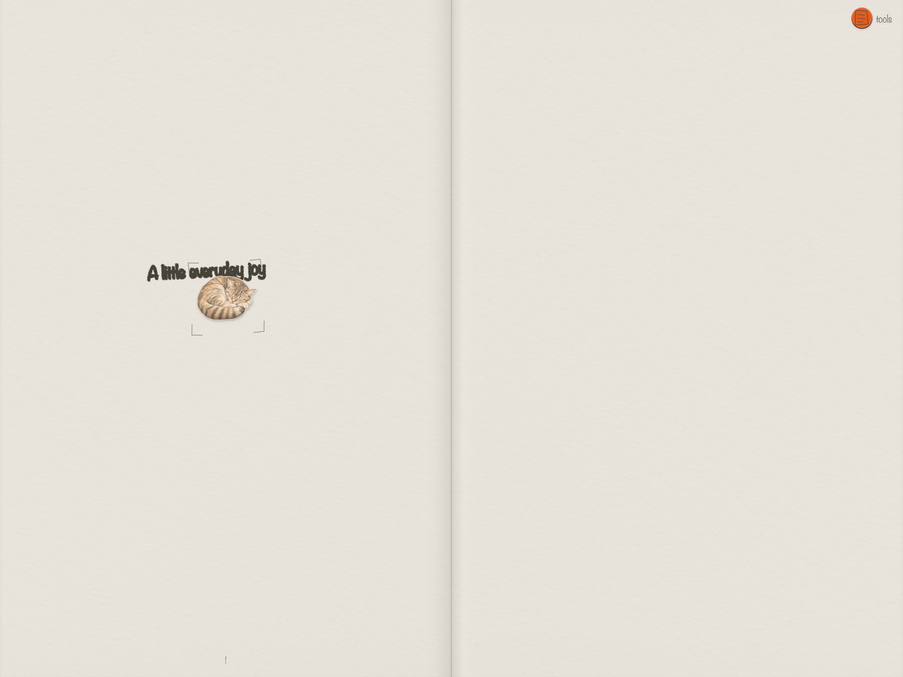
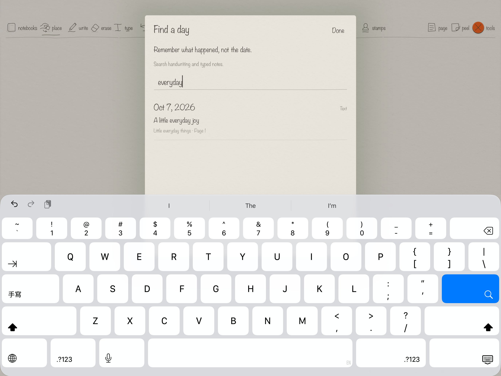
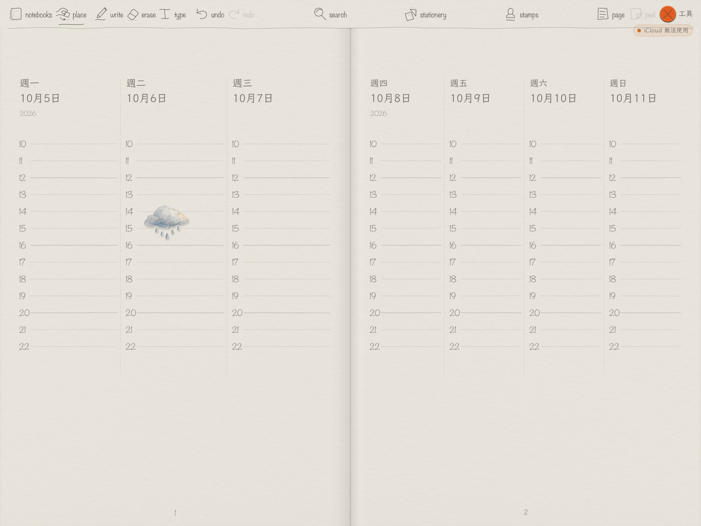
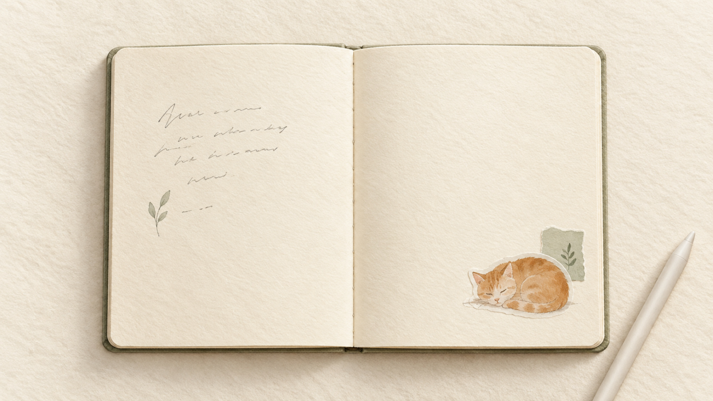

Asympta Paperie
A quiet, paper-inspired journal for iPhone and iPad. Write with Apple Pencil, add typed notes, stamps, stickers and photos, and find moments through live search.
Two notebooks are free. The optional, one-time Paperie Lifetime In-App Purchase unlocks unlimited notebooks. Writing works offline; available signed-in iCloud accounts sync automatically through the user's private CloudKit database. English and Traditional Chinese are available.
Version 1.0, Build 36 · October 7, 2026. Available to the internal TestFlight group. App Review is saved as a draft for developer review; public release follows developer approval and App Review approval.
Real iPhone screenshots






Real iPad screenshots





Header and Search Results artwork

The universal artwork is prepared for Apple's creative asset specifications. All app screenshots come from Build 36 simulator captures; orientation was flattened and the exported PNGs made opaque without changing app content.
Contact: hello@everformlab.com
© 2026 Ka Ho Lau